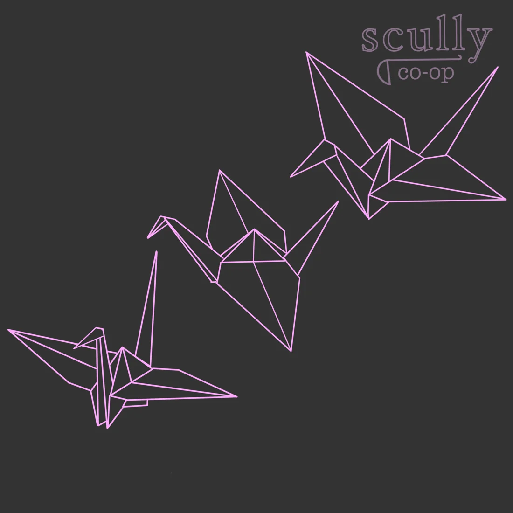
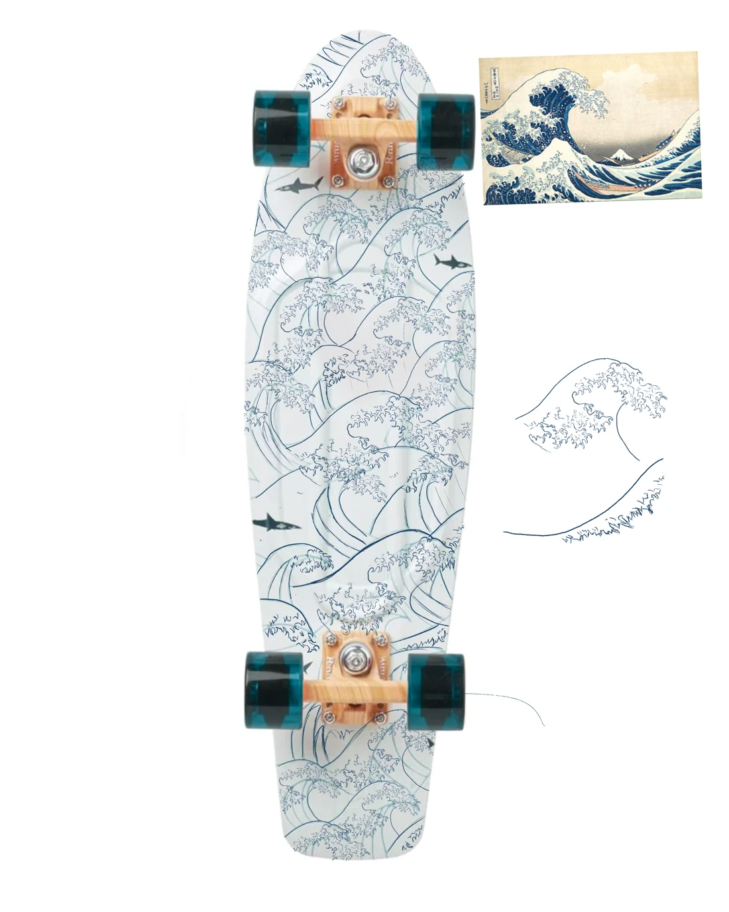

Scully co-op / shirt artworkCommunity & graphic design
A small corner of the internet
I make things, help people learn, and follow my curiosity.
Some of that turns into code. Some of it ends up on a T-shirt.

Scully co-op / shirt artworkCommunity & graphic design
Training should change how a unit makes decisions. The challenge is making that depth understandable and enjoyable to play.
I’ve worked to make that more accessible through arts education, free tutoring, mentoring, and curricula built around students’ needs.

Detail / open full studyDrawing & applied design
And in between
They’re part of the picture, too.
Keep in touch
For opportunities, collaborations, or a good conversation.
Community & graphic design
This shirt artwork brings together origami cranes and lettering for Scully co-op, the Princeton cooperative where I served as co-president.
The design is one part of a broader practice that includes illustration and occasional freelance graphic design.
Scully co-op · shirt artwork
Back to the collection ↑Development / Godot 4 / ongoing
My game prototype explores a combat system where training a unit affects its decisions, and players build skillsets that work together. The technical challenge is balancing a robust, flexible system with an experience that is still understandable and enjoyable.
An ability that was still recharging could score higher than a ready one, despite a penalty. That left the unit idle for a decision cycle. The current implementation falls back to the best ready skill above a minimum score, so it can act without wasting an ability that has no useful target.
The distinction matters: a preference score describes how attractive an action is; readiness checks determine whether it can actually happen. Adding tactical options also means accounting for the ways those rules interact.
More complex behavior is only useful if it improves play. I’m still evaluating whether the decisions are readable, whether training feels meaningful, and which systems justify their complexity. A working prototype lets me investigate those questions; it does not settle them.
I define the game design and system direction, direct AI-assisted development, and test and iterate on the prototype. It is an ongoing Pokémon fan-game project, not a finished commercial release.
Back to the collection ↑Education & community access
Quality education should be accessible to everyone, regardless of income or background. That commitment has guided my work with students, community programs, and learning resources.
As a fellow and visual arts co-lead with Trenton Arts at Princeton, I worked with students from Trenton. Arts education is part of my commitment to making learning opportunities more accessible.
As a site coordinator with the Princeton Online Tutoring Network, I recruited, trained, and matched volunteer tutors with students whose families could not afford tutoring. I also worked with community partners and supervised sessions.
As a fellow and later a head fellow in the Scholars Institute Fellows Program, I mentored underclassmen from first-generation, lower-income backgrounds. We worked through course planning, degree progress, and financial aid, and I connected them with campus offices and support.
At Princeton’s Computer Science Department, I worked with faculty to develop a 12-week introductory Java and Python curriculum with first-generation, lower-income students’ learning needs in mind. I facilitated workshops, gathered feedback, and revised materials for remote delivery.
I currently tutor students in mathematics, SAT preparation, and academic writing. I assess where each student is starting, adapt explanations, and plan practice around their needs.
Back to the collection ↑Drawing & applied design
A wave-patterned skateboard design study. The full sheet places the board alongside a reference image and individual wave drawings, showing the pattern at different scales.
The reference print shown in the study is Katsushika Hokusai’s The Great Wave off Kanagawa. The homepage displays a detail; the complete study is shown here.
Back to the collection ↑